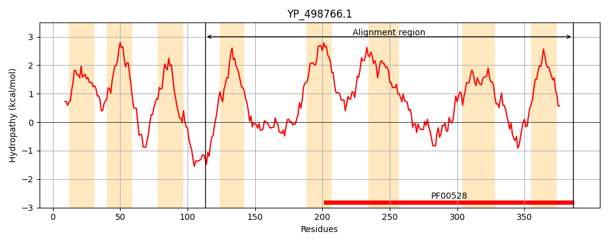
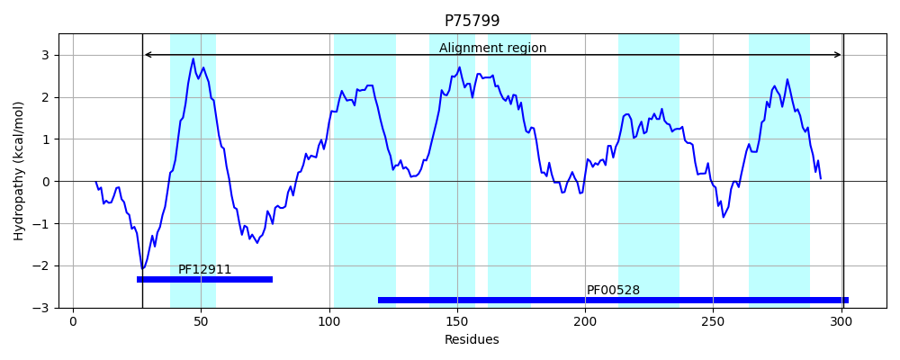
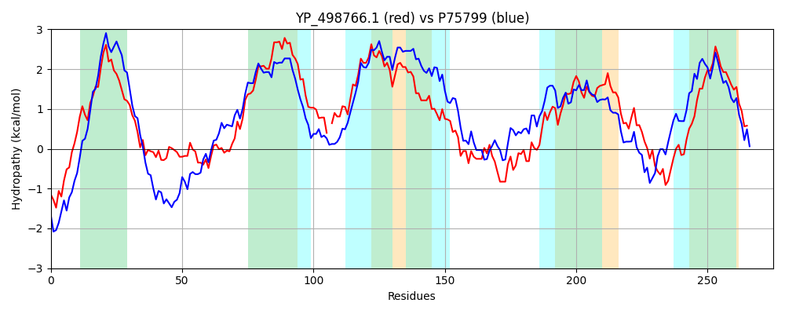

Hit Accession: P75799
Hit TCID: 3.A.1.5.11
Hit Description: gnl|BL_ORD_ID|11412 gnl|TC-DB|P75799|3.A.1.5.11 Hypothetical ABC transporter permease protein yliD - Escherichia coli.
Mach Len: 275
e:0.000000
Query TMS Count : 8
Hit TMS Count: 6
TMS-Overlap Score: 4.950000
Predicted Substrates:CHEBI:5437;glutathione
BLAST Alignment:
Score: 544 , Bit scores: 214 bits, E-value: 5.2e-67, Alignment length: 275, Percentage identity: 38
Query: 113 WESFIRKTTRHRIAIIGLLILVYMLTLSIVSQFTFDTTLATKNQFNALLHGPSLAYPFGTDDFGRDLFTRVVVGTKLTFSISIISVVIAVIFGVLLGTIAGYFNHI-DNLIMRILDVVFAIPSLLLAVAIIASFGASIPNLIIALSIGNIPSFARTMRASVLEIKRMEYVDAARITGENTWNIIWRYILPNAIAPMIVRFSLNIGVVVLTTSSLSFLGLGVAPDVAEWGNILRTGSNYLETHSNLAIVPGVCIMFVVLAFNFIGDAVRDALDPRI 386
W F R+ R +A+ L ++ ++ ++I +++ ++ L +GPSL + FG D GRD+F+RV+VG +++ + + +V I G LLG +AGY+ D LIMRI DV+FA P +LLA+A++A G+ I N+IIA++I +IP+FAR +R + L +K+ ++++AR G + ++ R+ILP ++ ++V F++ IG +++ +SLSFLGLG P EWG +L + ++A+ P + I VLAFN +GD +RDALDP+I
Sbjct: 27 WHEFWRRFRRQHMAMTAALFVILLIVVAIFARWIAPYDAENYFDYDNLNNGPSLQHWFGVDSLGRDIFSRVLVGAQISLAAGVFAVFIGAAIGTLLGLLAGYYEGWWDRLIMRICDVLFAFPGILLAIAVVAVLGSGIANVIIAVAIFSIPAFARLVRGNTLVLKQQTFIESARSIGASDMTVLLRHILPGTVSSIVVFFTMRIGTSIISAASLSFLGLGAQPPTPEWGAMLNEARADMVIAPHVAVFPALAIFLTVLAFNLLGDGLRDALDPKI 301 | Protein Hydropathy Plots: |
|---|
|  |  |
Pairwise Alignment-Hydropathy Plot:
|
|---|
|  |